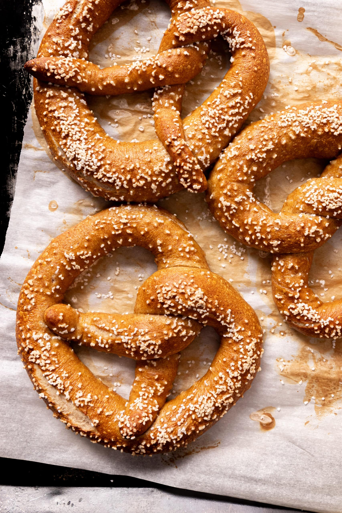
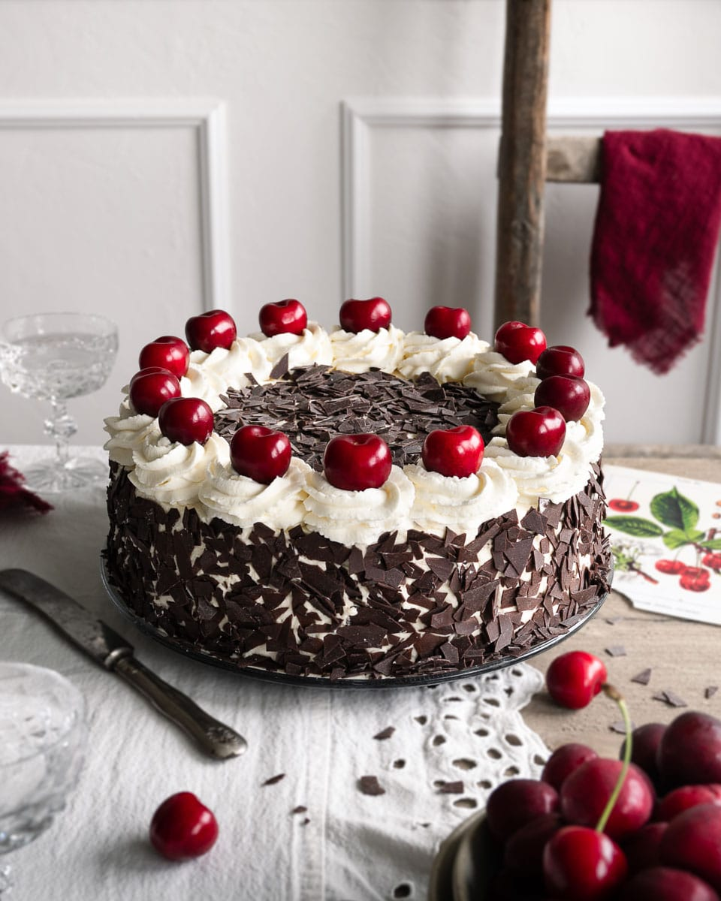
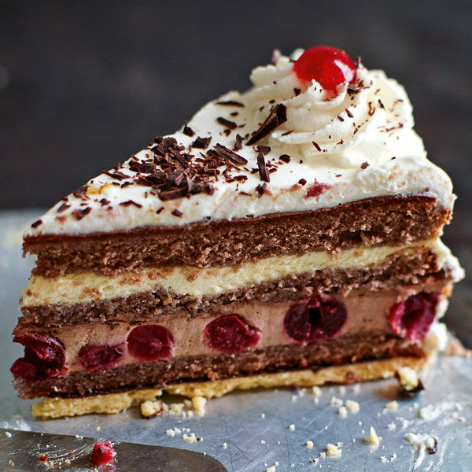
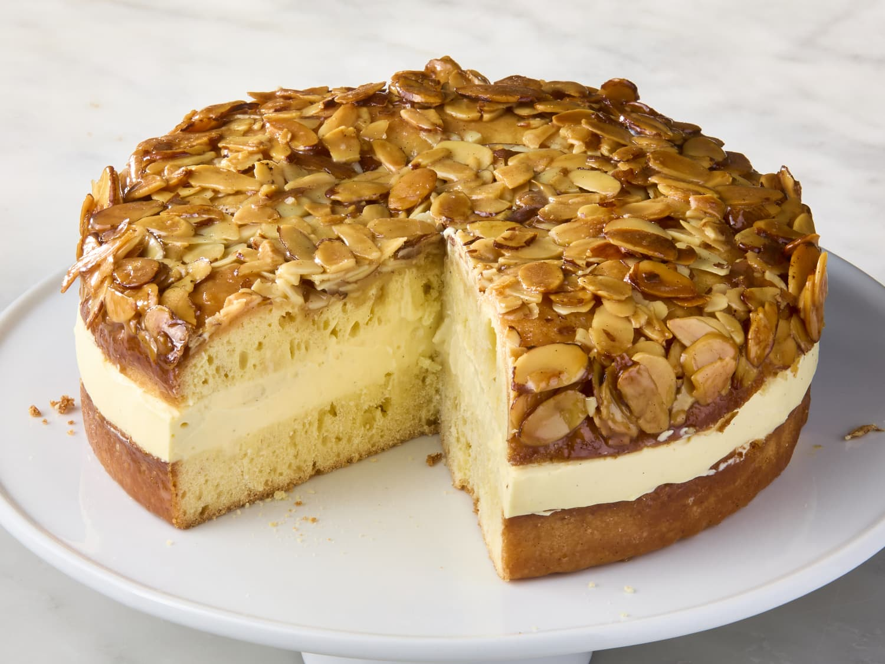

Bratwurst is a classic German sausage that has been delighting taste buds for centuries. Made from finely minced pork, beef, or veal
and seasoned with a blend of spices, each bite offers a savory, juicy experience. Traditionally grilled over an open flame or
pan-fried to perfection, it’s often served with mustard, sauerkraut, or fresh bread, capturing the heart of German street food culture.
Enjoying a Bratwurst is not just a meal—it’s a bite of Germany’s rich culinary heritage and convivial spirit.
Schnitzel
Schnitzel is one of Germany’s most beloved culinary treasures, a golden, crispy delight that has won hearts worldwide. Traditionally
made from tender veal, pork, or chicken, it’s pounded thin, breaded, and fried to perfection, creating a crunchy exterior that gives
way to juicy, flavorful meat inside. Often served with lemon wedges, potato salad, or spaetzle, Schnitzel embodies the warmth of
German kitchens and the comfort of hearty, timeless cuisine. Every bite is a taste of tradition, culture, and pure indulgence.
Sauerkraut
Sauerkraut is a quintessential German dish, a tangy and fragrant testament to centuries of culinary tradition. Made from finely
shredded cabbage that is naturally fermented, it develops a bright, slightly sour flavor that perfectly complements hearty meats like
sausages, pork, or Schnitzel. Beyond its taste, sauerkraut carries the essence of German home cooking—simple ingredients transformed
by patience and care into something deeply satisfying. Every forkful is a bite of history, culture, and the enduring spirit of German
gastronomy.
Pretzel (Brezel)

The Pretzel, or Brezel, is an iconic symbol of German baking, instantly recognizable by its twisted, knot-like shape. With a golden,
crisp exterior and soft, chewy interior, it’s more than just a snack—it’s a taste of tradition. Often sprinkled with coarse salt or
enjoyed with mustard, cheese, or sausages, the Brezel reflects Germany’s love for simple, hearty flavors. Each bite carries the warmth
of centuries-old bakeries, festive beer gardens, and the comforting charm of German culture.
Schwarzwälder Kirschtorte


The Schwarzwälder Kirschtorte, or Black Forest Cake, is a true German delight that embodies indulgence and tradition. Layers of rich
chocolate sponge are paired with sweet cherries, fluffy whipped cream, and a hint of Kirsch, creating a symphony of flavors and
textures. Adorned with chocolate shavings and whole cherries, this cake is as visually stunning as it is delicious. Each slice tells a
story of Germany’s culinary heritage, making it a must-try treat for visitors seeking a taste of authentic German sweetness.
Bienenstich

Bienenstich, or “Bee Sting Cake,” is a classic German pastry that’s as charming as it is delicious. A soft, yeasty cake is layered
with sweet vanilla cream or custard, then crowned with a golden, caramelized honey-almond topping that gives a delicate crunch with
every bite. Legend says a bee “stung” the baker when he first tried this honeyed treat—hence the name. Rich in flavor yet light in
texture, Bienenstich is a perfect example of Germany’s love for pastries, making it a must-try for anyone exploring the country’s
culinary heritage.
with a slice of Tortilla de Patatas — it’s a classic you can’t miss.